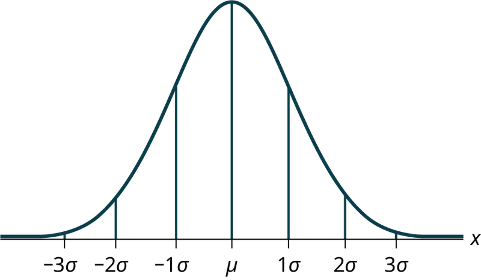
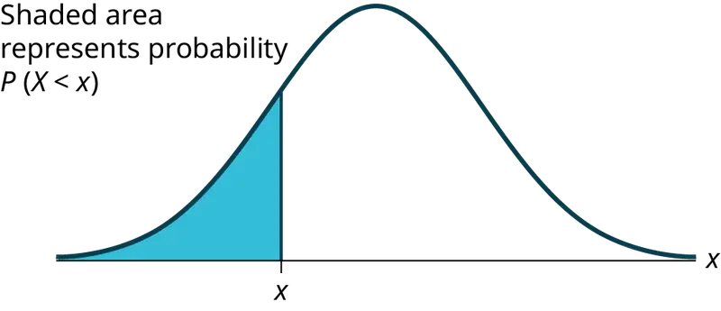
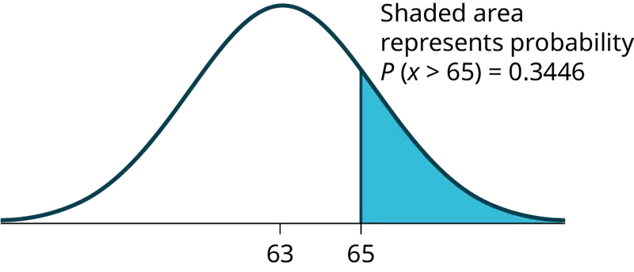
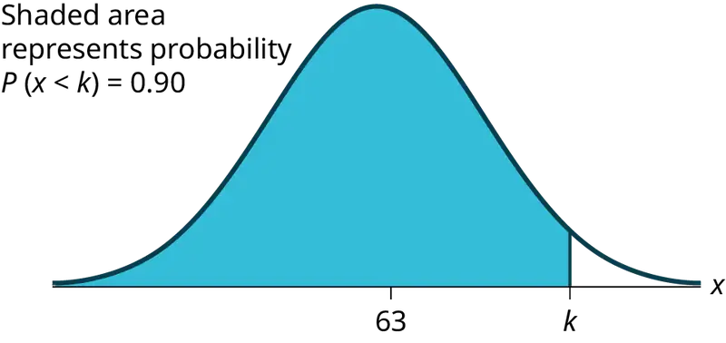
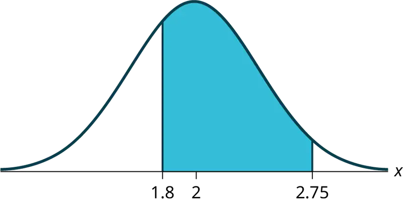
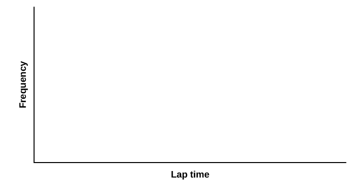
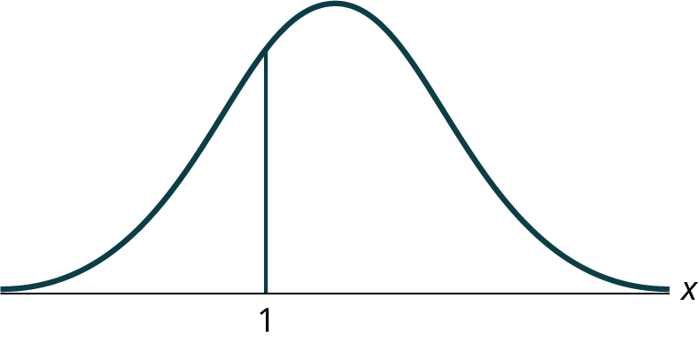
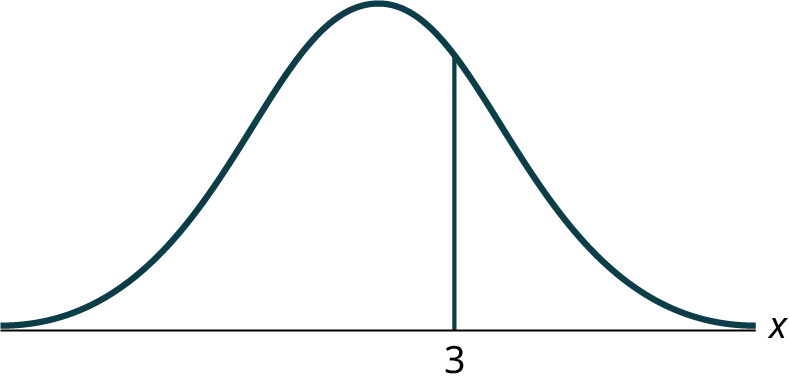
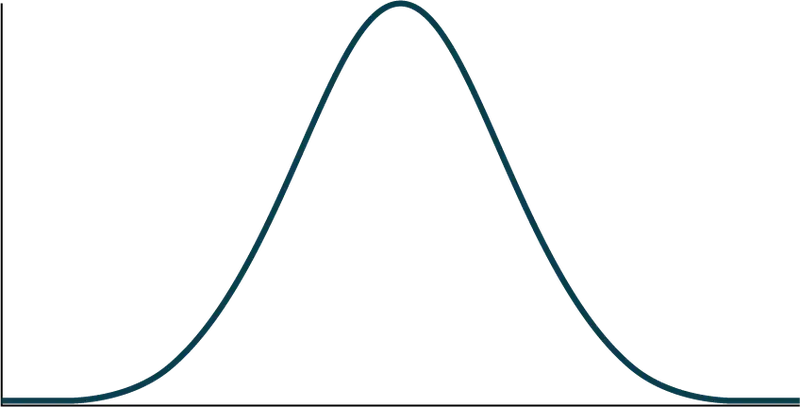

Chapter 6: The Normal Distribution¶
Introduction¶
Chapter Outline: Chapter Objectives
By the end of this chapter, the student should be able to:
- Recognize the normal probability distribution and apply it appropriately.
- Recognize the standard normal probability distribution and apply it appropriately.
- Compare normal probabilities by converting to the standard normal distribution.
The normal, a continuous distribution, is the most important of all the distributions. It is widely used and even more widely abused. Its graph is bell-shaped. You see the bell curve in almost all disciplines. Some of these include psychology, business, economics, the sciences, nursing, and, of course, mathematics. Some of your instructors may use the normal distribution to help determine your grade. Most IQ scores are normally distributed. Often real-estate prices fit a normal distribution. The normal distribution is extremely important, but it cannot be applied to everything in the real world.
In this chapter, you will study the normal distribution, the standard normal distribution, and applications associated with them.
The normal distribution has two parameters (two numerical descriptive measures): the mean (μ) and the standard deviation (σ). If X is a quantity to be measured that has a normal distribution with mean (μ) and standard deviation (σ), we designate this by writing
The probability density function is a rather complicated mathematical function. Do not memorize it. It is not necessary.
f(x) = \(\frac{1}{\sigma\cdot\sqrt{2\cdot\pi}}\cdot{\ \text{e}}^{-\frac{1}{2}\cdot{\left( \frac{x-\mu}{\sigma} \right)}^{2}}\)
The cumulative distribution function is P(X < x). It is calculated either by a calculator or a computer, or it is looked up in a table. Technology has made the tables virtually obsolete. For that reason, as well as the fact that there are various table formats, we are not including table instructions.
The curve is symmetric about a vertical line drawn through the mean, μ. In theory, the mean is the same as the median, because the graph is symmetric about μ. As the notation indicates, the normal distribution depends only on the mean and the standard deviation. Since the area under the curve must equal one, a change in the standard deviation, σ, causes a change in the shape of the curve; the curve becomes fatter or skinnier depending on σ. A change in μ causes the graph to shift to the left or right. This means there are an infinite number of normal probability distributions. One of special interest is called the standard normal distribution.
Collaborative Exercise: Collaborative Classroom Activity
Your instructor will record the heights of both men and women in your class, separately. Draw histograms of your data. Then draw a smooth curve through each histogram. Is each curve somewhat bell-shaped? Do you think that if you had recorded 200 data values for men and 200 for women that the curves would look bell-shaped? Calculate the mean for each data set. Write the means on the x-axis of the appropriate graph below the peak. Shade the approximate area that represents the probability that one randomly chosen male is taller than 72 inches. Shade the approximate area that represents the probability that one randomly chosen female is shorter than 60 inches. If the total area under each curve is one, does either probability appear to be more than 0.5?
6.1 The Standard Normal Distribution¶
The standard normal distribution is a normal distribution of standardized values called z-scores. A z-score is measured in units of the standard deviation. For example, if the mean of a normal distribution is five and the standard deviation is two, the value 11 is three standard deviations above (or to the right of) the mean. The calculation is as follows:
x = μ + (z)(σ) = 5 + (3)(2) = 11
The z-score is three.
The mean for the standard normal distribution is zero, and the standard deviation is one. The transformation z = \(\frac{x-\mu}{\sigma}\) produces the distribution Z ~ N(0, 1). The value x in the given equation comes from a normal distribution with mean μ and standard deviation σ.
Z-Scores¶
If X is a normally distributed random variable and X ~ N(μ, σ), then the z-score is:
The z-score tells you how many standard deviations the value x is above (to the right of) or below (to the left of) the mean, μ. Values of x that are larger than the mean have positive z-scores, and values of x that are smaller than the mean have negative z-scores. If x equals the mean, then x has a z-score of zero.
Example 6.1
Suppose X ~ N(5, 6). This says that X is a normally distributed random variable with mean μ = 5 and standard deviation σ = 6. Suppose x = 17. Then:
This means that x = 17 is two standard deviations (2σ) above or to the right of the mean μ = 5.
Notice that: 5 + (2)(6) = 17 (The pattern is μ + zσ = x)
Now suppose x = 1. Then: z = \(\frac{x-\mu}{\sigma}\) = \(\frac{1-5}{6}\) = –0.67 (rounded to two decimal places)
This means that x = 1 is 0.67 standard deviations (–0.67σ) below or to the left of the mean μ = 5. Notice that: 5 + (–0.67)(6) is approximately equal to one (This has the pattern μ + (–0.67)σ = 1)
Summarizing, when z is positive, x is above or to the right of μ and when z is negative, x is to the left of or below μ. Or, when z is positive, x is greater than μ, and when z is negative x is less than μ.
Try It
What is the z-score of x, when x = 1 and X ~ N(12,3)?
Example 6.2
Some doctors believe that a person can lose five pounds, on the average, in a month by reducing their fat intake and by exercising consistently. Suppose weight loss has a normal distribution. Let X = the amount of weight lost (in pounds) by a person in a month. Use a standard deviation of two pounds. X ~ N(5, 2). Fill in the blanks.
a. Suppose a person lost ten pounds in a month. The z-score when x = 10 pounds is z = 2.5 (verify). This z-score tells you that x = 10 is ________ standard deviations to the ________ (right or left) of the mean _____ (What is the mean?).
Solution
a. This z-score tells you that x = 10 is 2.5 standard deviations to the right of the mean five.
b. Suppose a person gained three pounds (a negative weight loss). Then z = __________. This z-score tells you that x = –3 is ________ standard deviations to the __________ (right or left) of the mean.
Solution
b. z = –4. This z-score tells you that x = –3 is four standard deviations to the left of the mean.
c. Suppose the random variables X and Y have the following normal distributions: X ~ N(5, 6) and Y ~ N(2, 1). If x = 17, then z = 2. (This was previously shown.) If y = 4, what is z?
Solution
c. z = \(\frac{y-\mu}{\sigma}\) = \(\frac{4-2}{1}\) = 2 where µ = 2 and σ = 1.
The z-score for y = 4 is z = 2. This means that four is z = 2 standard deviations to the right of the mean. Therefore, x = 17 and y = 4 are both two (of their own) standard deviations to the right of their respective means.
The z-score allows us to compare data that are scaled differently. To understand the concept, suppose X ~ N(5, 6) represents weight gains for one group of people who are trying to gain weight in a six week period and Y ~ N(2, 1) measures the same weight gain for a second group of people. A negative weight gain would be a weight loss. Since x = 17 and y = 4 are each two standard deviations to the right of their means, they represent the same, standardized weight gain relative to their means.
Try It
Fill in the blanks.
Jerome averages 16 points a game with a standard deviation of four points. X ~ N(16,4). Suppose Jerome scores ten points in a game. The z–score when x = 10 is –1.5. This score tells you that x = 10 is _____ standard deviations to the ______(right or left) of the mean______(What is the mean?).
The Empirical Rule
If X is a random variable and has a normal distribution with mean µ and standard deviation σ, then the Empirical Rule states the following:
- About 68% of the x values lie between –1σ and +1σ of the mean µ (within one standard deviation of the mean).
- About 95% of the x values lie between –2σ and +2σ of the mean µ (within two standard deviations of the mean).
- About 99.7% of the x values lie between –3σ and +3σ of the mean µ (within three standard deviations of the mean). Notice that almost all the x values lie within three standard deviations of the mean.
- The z-scores for +1σ and –1σ are +1 and –1, respectively.
- The z-scores for +2σ and –2σ are +2 and –2, respectively.
- The z-scores for +3σ and –3σ are +3 and –3 respectively.
The empirical rule is also known as the 68-95-99.7 rule.

Example 6.3
The mean height of 15 to 18-year-old males from Chile from 2009 to 2010 was 170 cm with a standard deviation of 6.28 cm. Male heights are known to follow a normal distribution. Let X = the height of a 15 to 18-year-old male from Chile in 2009 to 2010. Then X ~ N(170, 6.28).
a. Suppose a 15 to 18-year-old male from Chile was 168 cm tall from 2009 to 2010. The z-score when x = 168 cm is z = _______. This z-score tells you that x = 168 is ________ standard deviations to the ________ (right or left) of the mean _____ (What is the mean?).
b. Suppose that the height of a 15 to 18-year-old male from Chile from 2009 to 2010 has a z-score of z = 1.27. What is the male’s height? The z-score (z = 1.27) tells you that the male’s height is ________ standard deviations to the __________ (right or left) of the mean.
Solution
a. –0.32, 0.32, left, 170
b. 177.98 cm, 1.27, right
Try It
Use the information in Example 6.3 to answer the following questions.
- Suppose a 15 to 18-year-old male from Chile was 176 cm tall from 2009 to 2010. The z-score when x = 176 cm is z = _______. This z-score tells you that x = 176 cm is ________ standard deviations to the ________ (right or left) of the mean _____ (What is the mean?).
- Suppose that the height of a 15 to 18-year-old male from Chile from 2009 to 2010 has a z-score of z = –2. What is the male’s height? The z-score (z = –2) tells you that the male’s height is ________ standard deviations to the __________ (right or left) of the mean.
Example 6.4
From 1984 to 1985, the mean height of 15 to 18-year-old males from Chile was 172.36 cm, and the standard deviation was 6.34 cm. Let Y = the height of 15 to 18-year-old males from 1984 to 1985. Then Y ~ N(172.36, 6.34).
The mean height of 15 to 18-year-old males from Chile from 2009 to 2010 was 170 cm with a standard deviation of 6.28 cm. Male heights are known to follow a normal distribution. Let X = the height of a 15 to 18-year-old male from Chile in 2009 to 2010. Then X ~ N(170, 6.28).
Find the z-scores for x = 160.58 cm and y = 162.85 cm. Interpret each z-score. What can you say about x = 160.58 cm and y = 162.85 cm as they compare to their respective means and standard deviations?
Solution
The z-score for x = -160.58 is z = –1.5.
The z-score for y = 162.85 is z = –1.5.
Both x = 160.58 and y = 162.85 deviate the same number of standard deviations from their respective means and in the same direction.
Try It
In 2012, 1,664,479 students took the SAT exam. The distribution of scores in the verbal section of the SAT had a mean µ = 496 and a standard deviation σ = 114. Let X = a SAT exam verbal section score in 2012. Then X ~ N(496, 114).
Find the z-scores for x1 = 325 and x2 = 366.21. Interpret each z-score. What can you say about x1 = 325 and x2 = 366.21 as they compare to their respective means and standard deviations?
Example 6.5
Suppose x has a normal distribution with mean 50 and standard deviation 6.
- About 68% of the x values lie within one standard deviation of the mean. Therefore, about 68% of the x values lie between –1σ = (–1)(6) = –6 and 1σ = (1)(6) = 6 of the mean 50. The values 50 – 6 = 44 and 50 + 6 = 56 are within one standard deviation from the mean 50. The z-scores are –1 and +1 for 44 and 56, respectively.
- About 95% of the x values lie within two standard deviations of the mean. Therefore, about 95% of the x values lie between –2σ = (–2)(6) = –12 and 2σ = (2)(6) = 12. The values 50 – 12 = 38 and 50 + 12 = 62 are within two standard deviations from the mean 50. The z-scores are –2 and +2 for 38 and 62, respectively.
- About 99.7% of the x values lie within three standard deviations of the mean. Therefore, about 99.7% of the x values lie between –3σ = (–3)(6) = –18 and 3σ = (3)(6) = 18 from the mean 50. The values 50 – 18 = 32 and 50 + 18 = 68 are within three standard deviations of the mean 50. The z-scores are –3 and +3 for 32 and 68, respectively.
Try It
Suppose X has a normal distribution with mean 25 and standard deviation five. Between what values of x do 68% of the values lie?
Example 6.6
From 1984 to 1985, the mean height of 15 to 18-year-old males from Chile was 172.36 cm, and the standard deviation was 6.34 cm. Let Y = the height of 15 to 18-year-old males in 1984 to 1985. Then Y ~ N(172.36, 6.34).
- About 68% of the y values lie between what two values? These values are ________________. The z-scores are ________________, respectively.
- About 95% of the y values lie between what two values? These values are ________________. The z-scores are ________________ respectively.
- About 99.7% of the y values lie between what two values? These values are ________________. The z-scores are ________________, respectively.
Solution
- About 68% of the values lie between 166.02 cm and 178.7 cm. The z-scores are –1 and 1.
- About 95% of the values lie between 159.68 cm and 185.04 cm. The z-scores are –2 and 2.
- About 99.7% of the values lie between 153.34 cm and 191.38 cm. The z-scores are –3 and 3.
Try It
The scores on a college entrance exam have an approximate normal distribution with mean, µ = 52 points and a standard deviation, σ = 11 points.
- About 68% of the y values lie between what two values? These values are ________________. The z-scores are ________________, respectively.
- About 95% of the y values lie between what two values? These values are ________________. The z-scores are ________________, respectively.
- About 99.7% of the y values lie between what two values? These values are ________________. The z-scores are ________________, respectively.
6.2 Using the Normal Distribution¶
The shaded area in the following graph indicates the area to the left of x. This area is represented by the probability P(X < x). Normal tables, computers, and calculators provide or calculate the probability P(X < x).

The area to the right is then P ( X > x ) = 1 – P ( X < x ). Remember, P ( X < x ) = Area to the left of the vertical line through x . P ( X > x ) = 1 – P ( X < x ) = Area to the right of the vertical line through x . P ( X < x ) is the same as P ( X ≤ x ) and P ( X > x ) is the same as P ( X ≥ x ) for continuous distributions.
Calculations of Probabilities¶
Probabilities are calculated using technology. There are instructions given as necessary for the TI-83+ and TI-84 calculators.
NOTE
To calculate the probability, use the probability tables provided in Appendix H Tables without the use of technology. The tables include instructions for how to use them.
Example 6.7
If the area to the left is 0.0228, then the area to the right is 1 – 0.0228 = 0.9772.
Try It
If the area to the left of x is 0.012, then what is the area to the right?
Example 6.8
The final exam scores in a statistics class were normally distributed with a mean of 63 and a standard deviation of five.
a. Find the probability that a randomly selected student scored more than 65 on the exam.
Solution
a. Let X = a score on the final exam. X ~ N(63, 5), where μ = 63 and σ = 5.
Draw a graph.
Then, find P(x > 65).
P(x > 65) = 0.3446

The probability that any student selected at random scores more than 65 is 0.3446.
Using the Calculator
Go into 2nd DISTR.
After pressing 2nd DISTR, press 2:normalcdf.
The syntax for the instructions are as follows:
normalcdf(lower value, upper value, mean, standard deviation) For this problem: normalcdf(65,1E99,63,5) = 0.3446. You get 1E99 (= 1099) by pressing 1, the EE key (a 2nd key) and then 99. Or, you can enter 10^99 instead. The number 1099 is way out in the right tail of the normal curve. We are calculating the area between 65 and 1099. In some instances, the lower number of the area might be –1E99 (= –1099). The number –1099 is way out in the left tail of the normal curve.
Historical Note
The TI probability program calculates a z-score and then the probability from the z-score. Before technology, the z-score was looked up in a standard normal probability table (because the math involved is too cumbersome) to find the probability. In this example, a standard normal table with area to the left of the z-score was used. You calculate the z-score and look up the area to the left. The probability is the area to the right.
z = \(\frac{65\ \text{– 63}}{5}\) = 0.4
Area to the left is 0.6554.
P(x > 65) = P(z > 0.4) = 1 – 0.6554 = 0.3446
Using the Calculator
Find the percentile for a student scoring 65:
*Press 2nd Distr
*Press 2:normalcdf(
*Enter lower bound, upper bound, mean, standard deviation followed by )
*Press ENTER.
For this Example, the steps are 2nd Distr 2:normalcdf(65,1,2nd EE,99,63,5) ENTER
The probability that a selected student scored more than 65 is 0.3446.
To find the probability that a selected student scored more than 65, subtract the percentile from 1.
b. Find the probability that a randomly selected student scored less than 85.
Solution
b. Draw a graph.
Then find P(x < 85), and shade the graph.
Using a computer or calculator, find P(x < 85) = 1.
normalcdf(0,85,63,5) = 1 (rounds to one)
The probability that one student scores less than 85 is approximately one (or 100%).
c. Find the 90th percentile (that is, find the score k that has 90% of the scores below k and 10% of the scores above k).
Solution
c. Find the 90th percentile. For each problem or part of a problem, draw a new graph. Draw the x-axis. Shade the area that corresponds to the 90th percentile.
Let k = the 90th percentile. The variable k is located on the x-axis. P(x < k) is the area to the left of k. The 90th percentile k separates the exam scores into those that are the same or lower than k and those that are the same or higher. Ninety percent of the test scores are the same or lower than k, and ten percent are the same or higher. The variable k is often called a critical value.
k = 69.4

The 90th percentile is 69.4. This means that 90% of the test scores fall at or below 69.4 and 10% fall at or above. To get this answer on the calculator, follow this step:
Using the Calculator
invNorm in 2nd DISTR. invNorm(area to the left, mean, standard deviation)
For this problem, invNorm(0.90,63,5) = 69.4
d. Find the 70th percentile (that is, find the score k such that 70% of scores are below k and 30% of the scores are above k).
Solution
d. Find the 70th percentile.
Draw a new graph and label it appropriately. k = 65.6
The 70th percentile is 65.6. This means that 70% of the test scores fall at or below 65.5 and 30% fall at or above.
invNorm(0.70,63,5) = 65.6
Try It
The golf scores for a school team were normally distributed with a mean of 68 and a standard deviation of three.
Find the probability that a randomly selected golfer scored less than 65.
Example 6.9
A personal computer is used for office work at home, research, communication, personal finances, education, entertainment, social networking, and a myriad of other things. Suppose that the average number of hours a household personal computer is used for entertainment is two hours per day. Assume the times for entertainment are normally distributed and the standard deviation for the times is half an hour.
a. Find the probability that a household personal computer is used for entertainment between 1.8 and 2.75 hours per day.
Solution
a. Let X = the amount of time (in hours) a household personal computer is used for entertainment. X ~ N(2, 0.5) where μ = 2 and σ = 0.5.
Find P(1.8 < x < 2.75).
The probability for which you are looking is the area between x = 1.8 and x = 2.75. P(1.8 < x < 2.75) = 0.5886

normalcdf(1.8,2.75,2,0.5) = 0.5886
The probability that a household personal computer is used between 1.8 and 2.75 hours per day for entertainment is 0.5886.
b. Find the maximum number of hours per day that the bottom quartile of households uses a personal computer for entertainment.
Solution
b. To find the maximum number of hours per day that the bottom quartile of households uses a personal computer for entertainment, find the 25th percentile, k, where P(x < k) = 0.25.
invNorm(0.25,2,0.5) = 1.66
The maximum number of hours per day that the bottom quartile of households uses a personal computer for entertainment is 1.66 hours.
Try It
The golf scores for a school team were normally distributed with a mean of 68 and a standard deviation of three. Find the probability that a golfer scored between 66 and 70.
Example 6.10
In the United States the ages 13 to 55+ of smartphone users approximately follow a normal distribution with approximate mean and standard deviation of 36.9 years and 13.9 years, respectively.
a. Determine the probability that a random smartphone user in the age range 13 to 55+ is between 23 and 64.7 years old.
b. Determine the probability that a randomly selected smartphone user in the age range 13 to 55+ is at most 50.8 years old.
c. Find the 80th percentile of this distribution, and interpret it in a complete sentence.
Solution
a. normalcdf(23,64.7,36.9,13.9) = 0.8186
b. normalcdf(–1099,50.8,36.9,13.9) = 0.8413
c.
invNorm(0.80,36.9,13.9) = 48.6
The 80th percentile is 48.6 years.
80% of the smartphone users in the age range 13 – 55+ are 48.6 years old or less.
Try It
Use the information in Example 6.10 to answer the following questions.
- Find the 30th percentile, and interpret it in a complete sentence.
- What is the probability that the age of a randomly selected smartphone user in the range 13 to 55+ is less than 27 years old.
Example 6.11
In the United States the ages 13 to 55+ of smartphone users approximately follow a normal distribution with approximate mean and standard deviation of 36.9 years and 13.9 years respectively. Using this information, answer the following questions (round answers to one decimal place).
a. Calculate the interquartile range (IQR).
b. Forty percent of the smartphone users from 13 to 55+ are at least what age?
Solution
a.
IQR = Q3 – Q1
Calculate Q3 = 75th percentile and Q1 = 25th percentile.
invNorm(0.75,36.9,13.9) = Q3 = 46.2754
invNorm(0.25,36.9,13.9) = Q1 = 27.5246
IQR = Q3 – Q1 = 18.8
b.
Find k where P(x ≥ k) = 0.40 ("At least" translates to "greater than or equal to.")
0.40 = the area to the right.
Area to the left = 1 – 0.40 = 0.60.
The area to the left of k = 0.60.
invNorm(0.60,36.9,13.9) = 40.4215.
k = 40.4.
Forty percent of the smartphone users from 13 to 55+ are at least 40.4 years.
Try It
Two thousand students took an exam. The scores on the exam have an approximate normal distribution with a mean μ = 81 points and standard deviation σ = 15 points.
- Calculate the first- and third-quartile scores for this exam.
- The middle 50% of the exam scores are between what two values?
Example 6.12
A citrus farmer who grows mandarin oranges finds that the diameters of mandarin oranges harvested on his farm follow a normal distribution with a mean diameter of 5.85 cm and a standard deviation of 0.24 cm.
a. Find the probability that a randomly selected mandarin orange from this farm has a diameter larger than 6.0 cm. Sketch the graph.
b. The middle 20% of mandarin oranges from this farm have diameters between ______ and ______.
c. Find the 90th percentile for the diameters of mandarin oranges, and interpret it in a complete sentence.
Solution
a. normalcdf(6,10^99,5.85,0.24) = 0.2660
b.
1 – 0.20 = 0.80
The tails of the graph of the normal distribution each have an area of 0.40.
Find k1, the 40th percentile, and k2, the 60th percentile (0.40 + 0.20 = 0.60).
k1 = invNorm(0.40,5.85,0.24) = 5.79 cm
k2 = invNorm(0.60,5.85,0.24) = 5.91 cm
c. 6.16: Ninety percent of the diameter of the mandarin oranges is at most 6.16 cm.
Try It
Using the information from Example 6.12, answer the following:
- The middle 40% of mandarin oranges from this farm are between ______ and ______.
- Find the 16th percentile and interpret it in a complete sentence.
6.3 Normal Distribution (Lap Times)¶
Lab: Normal Distribution (Lap Times)
Class Time:
Names:
Student Learning Outcome
- The student will compare and contrast empirical data and a theoretical distribution to determine if Terry Vogel's lap times fit a continuous distribution.
Directions
Round the relative frequencies and probabilities to four decimal places. Carry all other decimal answers to two places.
Collect the Data
1. Use the data from Appendix C. Use a stratified sampling method by lap (races 1 to 20) and a random number generator to pick six lap times from each stratum. Record the lap times below for laps two to seven.
Table 6.1
2. Construct a histogram. Make five to six intervals. Sketch the graph using a ruler and pencil. Scale the axes.

3. Calculate the following:
a. \(\bar{x}\) = _______
b. s = _______
4. Draw a smooth curve through the tops of the bars of the histogram. Write one to two complete sentences to describe the general shape of the curve. (Keep it simple. Does the graph go straight across, does it have a v-shape, does it have a hump in the middle or at either end, and so on?)
Analyze the Distribution
Using your sample mean, sample standard deviation, and histogram to help, what is the approximate theoretical distribution of the data?
- X ~ _____(_____,_____)
- How does the histogram help you arrive at the approximate distribution?
Describe the Data
Use the data you collected to complete the following statements.
- The IQR goes from __________ to __________.
- IQR = __________. (IQR = Q3 – Q1)
- The 15th percentile is _______.
- The 85th percentile is _______.
- The median is _______.
- The empirical probability that a randomly chosen lap time is more than 130 seconds is _______.
- Explain the meaning of the 85th percentile of this data.
Theoretical Distribution
Using the theoretical distribution, complete the following statements. You should use a normal approximation based on your sample data.
- The IQR goes from __________ to __________.
- IQR = _______.
- The 15th percentile is _______.
- The 85th percentile is _______.
- The median is _______.
- The probability that a randomly chosen lap time is more than 130 seconds is _______.
- Explain the meaning of the 85th percentile of this distribution.
Discussion Questions
Do the data from the section titled Collect the Data give a close approximation to the theoretical distribution in the section titled Analyze the Distribution? In complete sentences and comparing the result in the sections titled Describe the Data and Theoretical Distribution, explain why or why not.
6.4 Normal Distribution (Pinkie Length)¶
Lab: Normal Distribution (Pinkie Length)
Class Time:
Names:
Student Learning Outcomes
- The student will compare empirical data and a theoretical distribution to determine if data from the experiment follow a continuous distribution.
Collect the Data
Measure the length of your pinky finger (in centimeters).
1. Randomly survey 30 adults for their pinky finger lengths. Round the lengths to the nearest 0.5 cm.
Table 6.2
2. Construct a histogram. Make five to six intervals. Sketch the graph using a ruler and pencil. Scale the axes.
3. Calculate the following.
a. \(\bar{x}\) = _______
b. s = _______
4. Draw a smooth curve through the top of the bars of the histogram. Write one to two complete sentences to describe the general shape of the curve. (Keep it simple. Does the graph go straight across, does it have a v-shape, does it have a hump in the middle or at either end, and so on?)
Analyze the Distribution
Using your sample mean, sample standard deviation, and histogram, what was the approximate theoretical distribution of the data you collected?
- X ~ _____(_____,_____)
- How does the histogram help you arrive at the approximate distribution?
Describe the Data
Using the data you collected complete the following statements. (Hint: order the data)
Remember
(IQR = Q3 – Q1)
- IQR = _______
- The 15th percentile is _______.
- The 85th percentile is _______.
- Median is _______.
- What is the theoretical probability that a randomly chosen pinky length is more than 6.5 cm?
- Explain the meaning of the 85th percentile of this data.
Theoretical Distribution
Using the theoretical distribution, complete the following statements. Use a normal approximation based on the sample mean and standard deviation.
- IQR = _______
- The 15th percentile is _______.
- The 85th percentile is _______.
- Median is _______.
- What is the theoretical probability that a randomly chosen pinky length is more than 6.5 cm?
- Explain the meaning of the 85th percentile of this data.
Discussion Questions
Do the data you collected give a close approximation to the theoretical distribution? In complete sentences and comparing the results in the sections titled Describe the Data and Theoretical Distribution, explain why or why not.
Chapter Review¶
Key Terms¶
- Normal Distribution
- a continuous random variable (RV) with pdf f(x) = \(\frac{1}{\sigma\sqrt{2\pi}}{\ \text{e}}^{{\frac{-(x\ -\ \mu)}{2\sigma^{2}}}^{2}}\), where μ is the mean of the distribution and σ is the standard deviation; notation: X ~ N(μ, σ). If μ = 0 and σ = 1, the RV is called the standard normal distribution.
- Standard Normal Distribution
- a continuous random variable (RV) X ~ N(0, 1); when X follows the standard normal distribution, it is often noted as Z ~ N(0, 1).
- z-score
- the linear transformation of the form z = \(\frac{x\ -\ \mu}{\sigma}\); if this transformation is applied to any normal distribution X ~ N(μ, σ) the result is the standard normal distribution Z ~ N(0,1). If this transformation is applied to any specific value x of the RV with mean μ and standard deviation σ, the result is called the z-score of x. The z-score allows us to compare data that are normally distributed but scaled differently.
Formula Review¶
X ∼ N(μ, σ)
μ = the mean
σ = the standard deviation
6.1 The Standard Normal Distribution¶
z = a standardized value (z-score)
mean = 0; standard deviation = 1
To find the observed value, x, when the z-scores is known:
x = μ + (z)σ
z-score: z = \(\frac{x-\mu}{\sigma}\)
Z = the random variable for z-scores
6.2 Using the Normal Distribution¶
Normal Distribution: X ~ N(µ, σ) where µ is the mean and σ is the standard deviation.
Standard Normal Distribution: Z ~ N(0, 1).
Calculator function for probability: normalcdf (lower x value of the area, upper x value of the area, mean, standard deviation)
Calculator function for the kth percentile: k = invNorm (area to the left of k, mean, standard deviation)
Chapter Review¶
6.1 The Standard Normal Distribution¶
A z-score is a standardized value. Its distribution is the standard normal, Z ~ N(0, 1). The mean of the z-scores is zero and the standard deviation is one. If z is the z-score for a value x from the normal distribution N(µ, σ) then z tells you how many standard deviations x is above (greater than) or below (less than) µ.
6.2 Using the Normal Distribution¶
The normal distribution, which is continuous, is the most important of all the probability distributions. Its graph is bell-shaped. This bell-shaped curve is used in almost all disciplines. Since it is a continuous distribution, the total area under the curve is one. The parameters of the normal are the mean µ and the standard deviation σ. A special normal distribution, called the standard normal distribution is the distribution of z-scores. Its mean is zero, and its standard deviation is one.
References¶
References
6.1 The Standard Normal Distribution
“Blood Pressure of Males and Females.” StatCruch, 2013. Available online at http://www.statcrunch.com/5.0/viewreport.php?reportid=11960 (accessed May 14, 2013).
“The Use of Epidemiological Tools in Conflict-affected populations: Open-access educational resources for policy-makers: Calculation of z-scores.” London School of Hygiene and Tropical Medicine, 2009. Available online at http://conflict.lshtm.ac.uk/page_125.htm (accessed May 14, 2013).
“2012 College-Bound Seniors Total Group Profile Report.” CollegeBoard, 2012. Available online at http://media.collegeboard.com/digitalServices/pdf/research/TotalGroup-2012.pdf (accessed May 14, 2013).
“Digest of Education Statistics: ACT score average and standard deviations by sex and race/ethnicity and percentage of ACT test takers, by selected composite score ranges and planned fields of study: Selected years, 1995 through 2009.” National Center for Education Statistics. Available online at http://nces.ed.gov/programs/digest/d09/tables/dt09_147.asp (accessed May 14, 2013).
Data from the San Jose Mercury News.
Data from The World Almanac and Book of Facts.
“List of stadiums by capacity.” Wikipedia. Available online at https://en.wikipedia.org/wiki/List_of_stadiums_by_capacity (accessed May 14, 2013).
Data from the National Basketball Association. Available online at www.nba.com (accessed May 14, 2013).
6.2 Using the Normal Distribution
“Naegele’s rule.” Wikipedia. Available online at http://en.wikipedia.org/wiki/Naegele's_rule (accessed May 14, 2013).
“403: NUMMI.” Chicago Public Media & Ira Glass, 2013. Available online at http://www.thisamericanlife.org/radio-archives/episode/403/nummi (accessed May 14, 2013).
“Scratch-Off Lottery Ticket Playing Tips.” WinAtTheLottery.com, 2013. Available online at http://www.winatthelottery.com/public/department40.cfm (accessed May 14, 2013).
“Smart Phone Users, By The Numbers.” Visual.ly, 2013. Available online at http://visual.ly/smart-phone-users-numbers (accessed May 14, 2013).
“Facebook Statistics.” Statistics Brain. Available online at http://www.statisticbrain.com/facebook-statistics/(accessed May 14, 2013).
Practice¶
6.1 The Standard Normal Distribution¶
1. A bottle of water contains 12.05 fluid ounces with a standard deviation of 0.01 ounces. Define the random variable X in words. X = ____________.
Answer
ounces of water in a bottle
2. A normal distribution has a mean of 61 and a standard deviation of 15. What is the median?
3. X ~ N(1, 2)
σ = _______
Answer
2
4. A company manufactures rubber balls. The mean diameter of a ball is 12 cm with a standard deviation of 0.2 cm. Define the random variable X in words. X = ______________.
5. X ~ N(–4, 1)
What is the median?
Answer
–4
6. X ~ N(3, 5)
σ = _______
7. X ~ N(–2, 1)
μ = _______
Answer
–2
8. What does a z-score measure?
9. What does standardizing a normal distribution do to the mean?
Answer
The mean becomes zero.
10. Is X ~ N(0, 1) a standardized normal distribution? Why or why not?
11. What is the z-score of x = 12, if it is two standard deviations to the right of the mean?
Answer
z = 2
12. What is the z-score of x = 9, if it is 1.5 standard deviations to the left of the mean?
13. What is the z-score of x = –2, if it is 2.78 standard deviations to the right of the mean?
Answer
z = 2.78
14. What is the z-score of x = 7, if it is 0.133 standard deviations to the left of the mean?
15. Suppose X ~ N(2, 6). What value of x has a z-score of three?
Answer
x = 20
16. Suppose X ~ N(8, 1). What value of x has a z-score of –2.25?
17. Suppose X ~ N(9, 5). What value of x has a z-score of –0.5?
Answer
x = 6.5
18. Suppose X ~ N(2, 3). What value of x has a z-score of –0.67?
19. Suppose X ~ N(4, 2). What value of x is 1.5 standard deviations to the left of the mean?
Answer
x = 1
20. Suppose X ~ N(4, 2). What value of x is two standard deviations to the right of the mean?
21. Suppose X ~ N(8, 9). What value of x is 0.67 standard deviations to the left of the mean?
Answer
x = 1.97
22. Suppose X ~ N(–1, 2). What is the z-score of x = 2?
23. Suppose X ~ N(12, 6). What is the z-score of x = 2?
Answer
z = –1.67
24. Suppose X ~ N(9, 3). What is the z-score of x = 9?
25. Suppose a normal distribution has a mean of six and a standard deviation of 1.5. What is the z-score of x = 5.5?
Answer
z ≈ –0.33
26. In a normal distribution, x = 5 and z = –1.25. This tells you that x = 5 is ____ standard deviations to the ____ (right or left) of the mean.
27. In a normal distribution, x = 3 and z = 0.67. This tells you that x = 3 is ____ standard deviations to the ____ (right or left) of the mean.
Answer
0.67, right
28. In a normal distribution, x = –2 and z = 6. This tells you that x = –2 is ____ standard deviations to the ____ (right or left) of the mean.
29. In a normal distribution, x = –5 and z = –3.14. This tells you that x = –5 is ____ standard deviations to the ____ (right or left) of the mean.
Answer
3.14, left
30. In a normal distribution, x = 6 and z = –1.7. This tells you that x = 6 is ____ standard deviations to the ____ (right or left) of the mean.
31. About what percent of x values from a normal distribution lie within one standard deviation (left and right) of the mean of that distribution?
Answer
about 68%
32. About what percent of the x values from a normal distribution lie within two standard deviations (left and right) of the mean of that distribution?
33. About what percent of x values lie between the second and third standard deviations (both sides)?
Answer
about 4%
34. Suppose X ~ N(15, 3). Between what x values does 68.27% of the data lie? The range of x values is centered at the mean of the distribution (i.e., 15).
35. Suppose X ~ N(–3, 1). Between what x values does 95.45% of the data lie? The range of x values is centered at the mean of the distribution(i.e., –3).
Answer
between –5 and –1
36. Suppose X ~ N(–3, 1). Between what x values does 34.14% of the data lie?
37. About what percent of x values lie between the mean and three standard deviations?
Answer
about 50%
38. About what percent of x values lie between the mean and one standard deviation?
39. About what percent of x values lie between the first and second standard deviations from the mean (both sides)?
Answer
about 27%
40. About what percent of x values lie between the first and third standard deviations(both sides)?
Use the following information to answer the next two exercises: The life of wearable fitness devices is normally distributed with mean of 4.1 years and a standard deviation of 1.3 years. A wearable fitness device is guaranteed for three years. We are interested in the length of time a wearable fitness device lasts.
41. Define the random variable X in words. X = _______________.
Answer
The lifetime of a wearable fitness device measured in years.
42. X ~ _____(_____,_____)
6.2 Using the Normal Distribution¶
43. How would you represent the area to the left of one in a probability statement?

Answer
P(x < 1)
44. What is the area to the right of one?
45. Is P(x < 1) equal to P(x ≤ 1)? Why?
Answer
Yes, because they are the same in a continuous distribution: P(x = 1) = 0
46. How would you represent the area to the left of three in a probability statement?

47. What is the area to the right of three?
Answer
1 – P(x < 3) or P(x > 3)
48. If the area to the left of x in a normal distribution is 0.123, what is the area to the right of x?
49. If the area to the right of x in a normal distribution is 0.543, what is the area to the left of x?
Answer
1 – 0.543 = 0.457
Use the following information to answer the next four exercises:
X ~ N(54, 8)
50. Find the probability that x > 56.
51. Find the probability that x < 30.
Answer
0.0013
52. Find the 80th percentile.
53. Find the 60th percentile.
Answer
56.03
54. X ~ N(6, 2)
Find the probability that x is between three and nine.
55. X ~ N(–3, 4)
Find the probability that x is between one and four.
Answer
0.1186
56. X ~ N(4, 5)
Find the maximum of x in the bottom quartile.
57. Use the following information to answer the next three exercise: The life of wearable fitness devices is normally distributed with a mean of 4.1 years and a standard deviation of 1.3 years. A wearable fitness device is guaranteed for three years. We are interested in the length of time a wearable fitness device lasts. Find the probability that a wearable fitness device will break down during the guarantee period.
a. Sketch the situation. Label and scale the axes. Shade the region corresponding to the probability.

b. P(0 < x < ____________) = ___________ (Use zero for the minimum value of x.)
Answer
- Answers may vary.
- 3, 0.1979
58. Find the probability that a wearable fitness device will last between 2.8 and six years.
a. Sketch the situation. Label and scale the axes. Shade the region corresponding to the probability.

b. P(__________ < x < __________) = __________
59. Find the 70th percentile of the distribution for the time a wearable fitness device lasts.
a. Sketch the situation. Label and scale the axes. Shade the region corresponding to the lower 70%.
b. P(x < k) = __________ Therefore, k = _________
Answer
- Answers may vary.
- 0.70, 4.78 years
Homework¶
6.1 The Standard Normal Distribution¶
Use the following information to answer the next two exercises: The patient recovery time from a particular surgical procedure is normally distributed with a mean of 5.3 days and a standard deviation of 2.1 days.
60. What is the median recovery time?
- 2.7
- 5.3
- 7.4
- 2.1
61. What is the z-score for a patient who takes ten days to recover?
- 1.5
- 0.2
- 2.2
- 7.3
Answer
c
62. The length of time to find a parking space at 9 A.M. follows a normal distribution with a mean of five minutes and a standard deviation of two minutes. If the mean is significantly greater than the standard deviation, which of the following statements is true?
- The data cannot follow the uniform distribution.
- The data cannot follow the exponential distribution..
- The data cannot follow the normal distribution.
- I only
- II only
- III only
- I, II, and III
63. The heights of the 430 National Basketball Association players were listed on team rosters at the start of a recent season. The heights of basketball players have an approximate normal distribution with mean, µ = 79 inches and a standard deviation, σ = 3.89 inches. For each of the following heights, calculate the z-score and interpret it using complete sentences.
- 77 inches
- 85 inches
- If an NBA player reported his height had a z-score of 3.5, would you believe him? Explain your answer.
Answer
- Use the z-score formula. z = –0.5141. The height of 77 inches is 0.5141 standard deviations below the mean. An NBA player whose height is 77 inches is shorter than average.
- Use the z-score formula. z = 1.5424. The height 85 inches is 1.5424 standard deviations above the mean. An NBA player whose height is 85 inches is taller than average.
- Height = 79 + 3.5(3.89) = 92.615 inches, which is taller than 7 feet, 8 inches. There are very few NBA players this tall so the answer is no, not likely.
64. The systolic blood pressure (given in millimeters) of males has an approximately normal distribution with mean µ = 125 and standard deviation σ = 14. Systolic blood pressure for males follows a normal distribution.
- Calculate the z-scores for the male systolic blood pressures 100 and 150 millimeters.
- If a male friend of yours said he thought his systolic blood pressure was 2.5 standard deviations below the mean, but that he believed his blood pressure was between 100 and 150 millimeters, what would you say to him?
65. Kyle’s doctor told him that the z-score for his systolic blood pressure is 1.75. Which of the following is the best interpretation of this standardized score? The systolic blood pressure (given in millimeters) of males has an approximately normal distribution with mean µ = 125 and standard deviation σ = 14. If X = a systolic blood pressure score then X ~ N (125, 14).
a. Which answer(s) is/are correct?
i. Kyle’s systolic blood pressure is 175.
ii. Kyle’s systolic blood pressure is 1.75 times the average blood pressure of men his age.
iii. Kyle’s systolic blood pressure is 1.75 above the average systolic blood pressure of men his age.
iv. Kyles’s systolic blood pressure is 1.75 standard deviations above the average systolic blood pressure for men.
b. Calculate Kyle’s blood pressure.
Answer
- iv
- Kyle’s blood pressure is equal to 125 + (1.75)(14) = 149.5.
66. Height and weight are two measurements used to track a child’s development. The World Health Organization measures child development by comparing the weights of children who are the same height and the same gender. In 2009, weights for all 80 cm girls in the reference population had a mean µ = 10.2 kg and standard deviation σ = 0.8 kg. Weights are normally distributed. X ~ N(10.2, 0.8). Calculate the z-scores that correspond to the following weights and interpret them.
- 11 kg
- 7.9 kg
- 12.2 kg
67. During a certain year, 1,475,623 students heading to college took the SAT. The distribution of scores in the math section of the SAT follows a normal distribution with mean µ = 520 and standard deviation σ = 115.
- Calculate the z-score for an SAT score of 720. Interpret it using a complete sentence.
- What math SAT score is 1.5 standard deviations above the mean? What can you say about this SAT score?
- During a different year, the SAT math test had a mean of 514 and standard deviation 117. The ACT math test is an alternate to the SAT and is approximately normally distributed with mean 21 and standard deviation 5.3. If one person took the SAT math test and scored 700 and a second person took the ACT math test and scored 30, who did better with respect to the test they took?
Answer
Let X = an SAT math score and Y = an ACT math score. Use the z-score formula.
- X = 720 : \(z=\frac{720-520}{115}=1.74\). The exam score of 720 is 1.74 standard deviations above the mean of 520.
- z = 1.5
The math SAT score is 520 + 1.5(115) ≈ 692.5. The exam score of 692.5 is 1.5 standard deviations above the mean of 520. - \(\frac{X-\mu}{\sigma}\) = \(\frac{\text{700 – 514}}{117}\) ≈ 1.59, the z-score for the SAT. \(\frac{Y-\mu}{\sigma}\) = \(\frac{30-21}{5.3}\) ≈ 1.70, the z-scores for the ACT. With respect to the test they took, the person who took the ACT did better (has the higher z-score).
6.2 Using the Normal Distribution¶
Use the following information to answer the next two exercises: The patient recovery time from a particular surgical procedure is normally distributed with a mean of 5.3 days and a standard deviation of 2.1 days.
68. What is the probability of spending more than two days in recovery?
- 0.0580
- 0.8447
- 0.0553
- 0.9420
69. The 90th percentile for recovery times is?
- 8.89
- 7.07
- 7.99
- 4.32
Answer
c
Use the following information to answer the next three exercises: The length of time it takes to find a parking space at 9 A.M. follows a normal distribution with a mean of five minutes and a standard deviation of two minutes.
70. Based upon the given information and numerically justified, would you be surprised if it took less than one minute to find a parking space?
- Yes
- No
- Unable to determine
71. Find the probability that it takes at least eight minutes to find a parking space.
- 0.0001
- 0.9270
- 0.1862
- 0.0668
Answer
d
72. Seventy percent of the time, it takes more than how many minutes to find a parking space?
- 1.24
- 2.41
- 3.95
- 6.05
73. According to a study done by De Anza students, the height for Asian adult males is normally distributed with an average of 66 inches and a standard deviation of 2.5 inches. Suppose one Asian adult male is randomly chosen. Let X = height of the individual.
- X ~ _____(_____,_____)
- Find the probability that the person is between 65 and 69 inches. Include a sketch of the graph, and write a probability statement.
- Would you expect to meet many Asian adult males over 72 inches? Explain why or why not, and justify your answer numerically.
Answer
- X ~ N(66, 2.5)
- 0.5404
- No, the probability that an Asian male is over 72 inches tall is 0.0082
74. IQ is normally distributed with a mean of 100 and a standard deviation of 15. Suppose one individual is randomly chosen. Let X = IQ of an individual.
- X ~ _____(_____,_____)
- Find the probability that the person has an IQ greater than 120. Include a sketch of the graph, and write a probability statement.
- MENSA is an organization whose members have the top 2% of all IQs. Find the minimum IQ needed to qualify for the MENSA organization. Sketch the graph, and write the probability statement.
- The middle 50% of IQs fall between what two values? Sketch the graph and write the probability statement.
75. The percent of fat calories that a person in America consumes each day is normally distributed with a mean of about 36 and a standard deviation of 10. Suppose that one individual is randomly chosen. Let X = percent of fat calories.
- X ~ _____(_____,_____)
- Find the probability that the percent of fat calories a person consumes is more than 40. Graph the situation. Shade in the area to be determined.
- Find the maximum number for the lower quarter of percent of fat calories. Sketch the graph and write the probability statement.
Answer
- X ~ N(36, 10)
- The probability that a person consumes more than 40% of their calories as fat is 0.3446.
- Approximately 25% of people consume less than 29.26% of their calories as fat.
76. Suppose that the distance of fly balls hit to the outfield (in baseball) is normally distributed with a mean of 250 feet and a standard deviation of 50 feet.
- If X = distance in feet for a fly ball, then X ~ _____(_____,_____)
- If one fly ball is randomly chosen from this distribution, what is the probability that this ball traveled fewer than 220 feet? Sketch the graph. Scale the horizontal axis X. Shade the region corresponding to the probability. Find the probability.
- Find the 80th percentile of the distribution of fly balls. Sketch the graph, and write the probability statement.
77. In China, four-year-olds average three hours a day unsupervised. Most of the unsupervised children live in rural areas, considered safe. Suppose that the standard deviation is 1.5 hours and the amount of time spent alone is normally distributed. We randomly select one Chinese four-year-old living in a rural area. We are interested in the amount of time the child spends alone per day.
- In words, define the random variable X.
- X ~ _____(_____,_____)
- Find the probability that the child spends less than one hour per day unsupervised. Sketch the graph, and write the probability statement.
- What percent of the children spend over ten hours per day unsupervised?
- Seventy percent of the children spend at least how long per day unsupervised?
Answer
- X = number of hours that a Chinese four-year-old in a rural area is unsupervised during the day.
- X ~ N(3, 1.5)
- The probability that the child spends less than one hour a day unsupervised is 0.0918.
- The probability that a child spends over ten hours a day unsupervised is less than 0.0001.
- 2.21 hours
78. In a certain presidential election, Alaska’s 40 election districts averaged 1,956.8 votes per district for Candidate A. The standard deviation was 572.3. (There are only 40 election districts in Alaska.) The distribution of the votes per district for Candidate A was bell-shaped. Let X = number of votes for Candidate A for an election district.
- State the approximate distribution of X.
- Is 1,956.8 a population mean or a sample mean? How do you know?
- Find the probability that a randomly selected district had fewer than 1,600 votes for Candidate A. Sketch the graph and write the probability statement.
- Find the probability that a randomly selected district had between 1,800 and 2,000 votes for Candidate A.
- Find the third quartile for votes for Candidate A.
79. Suppose that the duration of a particular type of criminal trial is known to be normally distributed with a mean of 21 days and a standard deviation of seven days.
- In words, define the random variable X.
- X ~ _____(_____,_____)
- If one of the trials is randomly chosen, find the probability that it lasted at least 24 days. Sketch the graph and write the probability statement.
- Sixty percent of all trials of this type are completed within how many days?
Answer
- X = the distribution of the number of days a particular type of criminal trial will take
- X ~ N(21, 7)
- The probability that a randomly selected trial will last more than 24 days is 0.3336.
- 22.77
80. A motorcycle racer averages 129.71 seconds per 2.5 mile lap (in a seven-lap race) with a standard deviation of 2.28 seconds. The distribution of their race times is normally distributed. We are interested in one of their randomly selected laps.
- In words, define the random variable X.
- X ~ _____(_____,_____)
- Find the percent of the racer's laps that are completed in less than 130 seconds.
- The fastest 3% of the racer's laps are under _____.
- The middle 80% of the racer's laps are from _______ seconds to _______ seconds.
81. Thuy Dau, Ngoc Bui, Sam Su, and Lan Voung conducted a survey as to how long customers at Lucky claimed to wait in the checkout line until their turn. Let X = time in line. Table 6.3 displays the ordered real data (in minutes):
Table 6.3
| 0.50 | 4.25 | 5 | 6 | 7.25 |
| 1.75 | 4.25 | 5.25 | 6 | 7.25 |
| 2 | 4.25 | 5.25 | 6.25 | 7.25 |
| 2.25 | 4.25 | 5.5 | 6.25 | 7.75 |
| 2.25 | 4.5 | 5.5 | 6.5 | 8 |
| 2.5 | 4.75 | 5.5 | 6.5 | 8.25 |
| 2.75 | 4.75 | 5.75 | 6.5 | 9.5 |
| 3.25 | 4.75 | 5.75 | 6.75 | 9.5 |
| 3.75 | 5 | 6 | 6.75 | 9.75 |
| 3.75 | 5 | 6 | 6.75 | 10.75 |
- Calculate the sample mean and the sample standard deviation.
- Construct a histogram.
- Draw a smooth curve through the midpoints of the tops of the bars.
- In words, describe the shape of your histogram and smooth curve.
- Let the sample mean approximate μ and the sample standard deviation approximate σ. The distribution of X can then be approximated by X ~ _____(_____,_____)
- Use the distribution in part e to calculate the probability that a person will wait fewer than 6.1 minutes.
- Determine the cumulative relative frequency for waiting less than 6.1 minutes.
- Why aren’t the answers to part f and part g exactly the same?
- Why are the answers to part f and part g as close as they are?
- If only ten customers has been surveyed rather than 50, do you think the answers to part f and part g would have been closer together or farther apart? Explain your conclusion.
Answer
- mean = 5.51, s = 2.15
- Answers may vary.
- Answers may vary.
- Answers may vary.
- X ~ N(5.51, 2.15)
- 0.6029
- The cumulative frequency for less than 6.1 minutes is 0.64.
- The answers to part f and part g are not exactly the same, because the normal distribution is only an approximation to the real one.
- The answers to part f and part g are close, because a normal distribution is an excellent approximation when the sample size is greater than 30.
- The approximation would have been less accurate, because the smaller sample size means that the data does not fit normal curve as well.
82. Suppose that Ric and Anita attend different colleges. Ric’s GPA is the same as the average GPA at their school. Anita’s GPA is 0.70 standard deviations above her school average. In complete sentences, explain why each of the following statements may be false.
- Ric’s actual GPA is lower than Anita’s actual GPA.
- Ric is not passing because their z-score is zero.
- Anita is in the 70th percentile of students at her college.
83. Table 6.4 shows a sample of the maximum capacity (maximum number of spectators) of sports stadiums. The table does not include horse-racing or motor-racing stadiums.
Table 6.4
| 40,000 | 40,000 | 45,050 | 45,500 | 46,249 | 48,134 |
| 49,133 | 50,071 | 50,096 | 50,466 | 50,832 | 51,100 |
| 51,500 | 51,900 | 52,000 | 52,132 | 52,200 | 52,530 |
| 52,692 | 53,864 | 54,000 | 55,000 | 55,000 | 55,000 |
| 55,000 | 55,000 | 55,000 | 55,082 | 57,000 | 58,008 |
| 59,680 | 60,000 | 60,000 | 60,492 | 60,580 | 62,380 |
| 62,872 | 64,035 | 65,000 | 65,050 | 65,647 | 66,000 |
| 66,161 | 67,428 | 68,349 | 68,976 | 69,372 | 70,107 |
| 70,585 | 71,594 | 72,000 | 72,922 | 73,379 | 74,500 |
| 75,025 | 76,212 | 78,000 | 80,000 | 80,000 | 82,300 |
- Calculate the sample mean and the sample standard deviation for the maximum capacity of sports stadiums (the data).
- Construct a histogram.
- Draw a smooth curve through the midpoints of the tops of the bars of the histogram.
- In words, describe the shape of your histogram and smooth curve.
- Let the sample mean approximate μ and the sample standard deviation approximate σ. The distribution of X can then be approximated by X ~ _____(_____,_____).
- Use the distribution in part e to calculate the probability that the maximum capacity of sports stadiums is less than 67,000 spectators.
- Determine the cumulative relative frequency that the maximum capacity of sports stadiums is less than 67,000 spectators. Hint: Order the data and count the sports stadiums that have a maximum capacity less than 67,000. Divide by the total number of sports stadiums in the sample.
- Why aren’t the answers to part f and part g exactly the same?
Answer
- mean = 60,136
s = 10,468 - Answers will vary.
- Answers will vary.
- Answers will vary.
- X ~ N(60136, 10468)
- 0.7440
- The cumulative relative frequency is 43/60 = 0.717.
- The answers for part f and part g are not the same, because the normal distribution is only an approximation.
84. An expert witness for a paternity lawsuit testifies that the length of a pregnancy is normally distributed with a mean of 280 days and a standard deviation of 13 days. The person who is being sued for lack of child support was out of the country from 240 to 306 days before the birth of the child, so the pregnancy would have been less than 240 days or more than 306 days long if he was the biological parent. The birth was uncomplicated, and the child needed no medical intervention. What is the probability that he was NOT the parent? What is the probability that he could be the parent? Calculate the z-scores first, and then use those to calculate the probability.
85. An automotive factory can build an average of 6,000 cars and trucks a week. Generally, 10% of the cars were defective coming off the assembly line. Suppose we draw a random sample of n = 100 cars. Let X represent the number of defective cars in the sample. What can we say about X in regard to the 68-95-99.7 empirical rule (one standard deviation, two standard deviations and three standard deviations from the mean are being referred to)? Assume a normal distribution for the defective cars in the sample.
Answer
n = 100; p = 0.1; q = 0.9
μ = np = (100)(0.10) = 10
σ = \(\sqrt{npq}\) = \(\sqrt{\text{(100)(0}\text{.1)(0}\text{.9)}}\) = 3
- z = ±1: x1 = µ + zσ = 10 + 1(3) = 13 and x2 = µ – zσ = 10 – 1(3) = 7. 68% of the defective cars will fall between seven and 13.
- z = ±2: x1 = µ + zσ = 10 + 2(3) = 16 and x2 = µ – zσ = 10 – 2(3) = 4. 95 % of the defective cars will fall between four and 16
- z = ±3: x1 = µ + zσ = 10 + 3(3) = 19 and x2 = µ – zσ = 10 – 3(3) = 1. 99.7% of the defective cars will fall between one and 19.
86. We flip a coin 100 times (n = 100) and note that it only comes up heads 20% (p = 0.20) of the time. The mean and standard deviation for the number of times the coin lands on heads is µ = 20 and σ = 4 (verify the mean and standard deviation). Solve the following:
- There is about a 68% chance that the number of heads will be somewhere between ___ and ___.
- There is about a ____chance that the number of heads will be somewhere between 12 and 28.
- There is about a ____ chance that the number of heads will be somewhere between eight and 32.
87. A $1 scratch off lotto ticket will be a winner one out of five times. Out of a shipment of n = 190 lotto tickets, find the probability for the lotto tickets that there are
- somewhere between 34 and 54 prizes.
- somewhere between 54 and 64 prizes.
- more than 64 prizes.
Answer
n = 190; p = \(\frac{1}{5}\) = 0.2; q = 0.8
μ = np = (190)(0.2) = 38
σ = \(\sqrt{npq}\) = \(\sqrt{\text{(190)(0}\text{.2)(0}\text{.8)}}\) = 5.5136
- For this problem: P(34 < x < 54) = normalcdf(34,54,48,5.5136) = 0.7641
- For this problem: P(54 < x < 64) = normalcdf(54,64,48,5.5136) = 0.0018
- For this problem: P(x > 64) = normalcdf(64,1099,48,5.5136) = 0.0000012 (approximately 0)
88. On average, 28% of 18 to 34 year olds check social media before getting out of bed in the morning. Suppose this percentage follows a normal distribution with a standard deviation of 5%.
- Find the probability that the percent of 18 to 34-year-olds who check social media before getting out of bed in the morning is at least 30.
- Find the 95th percentile, and express it in a sentence.
Adapted from Introductory Statistics 2e by OpenStax, licensed under CC BY 4.0. Access the original for free at openstax.org. Changes: converted to the web reading format of The Open Book Project.